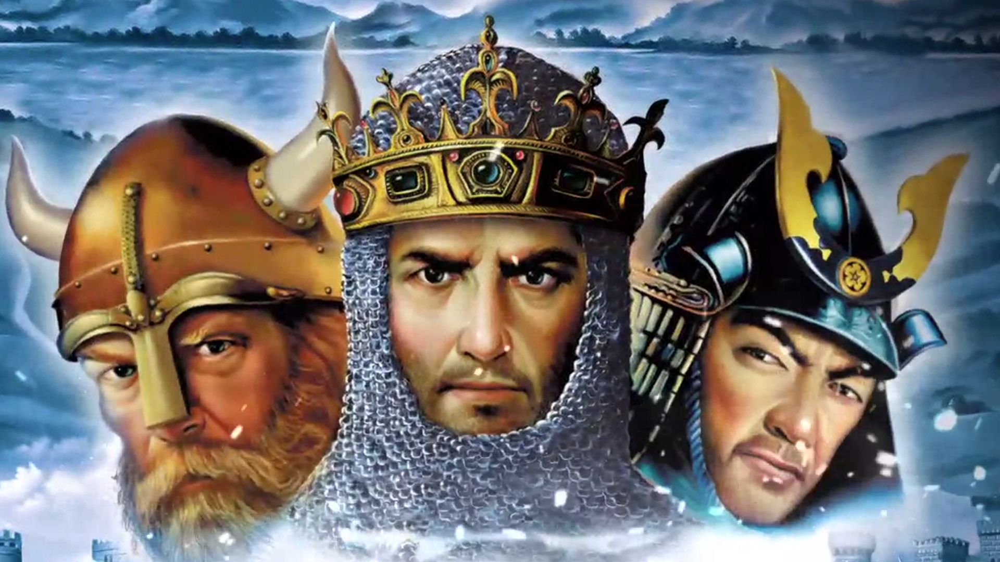

İlgi Alanlarım
İzlediğim diziler arasında en beğendiğim dizi House MD olmuştur

Ana karakterimiz çözülemeyen zorluktaki vakaları teşhis etmeye çalışan bir doktor. Karakterin hayata bakışı, sorunlara yaklaşımı, yaşadığı duygu-mantık çatışması beni diziye bağlayan ana sebeplerden biri olmuştur.
Filmler konusuna gelirsek eğer ilgimi bilim-kurgu, korku, aksiyon filmleri çekiyor. Korku filmleri arasında en beğendiğim ruhlar bölgesi olmuştur.

Bilim-kurgu filmleri arasında ise yıldızlararası, zamana karşı, yerçekimi gibi benzer konulu filmler ilgi alanımda olmuştur.
Bilgisayar oyunlarına ayrıca değinmek istiyorum. çocukluğumun oyunu olan Age of Empires II ye değinmezsem olmaz :)
Bİrçok bilgisayar oyunu arasında olan Age of Empires II nin kalbimde özel bir yeri vardır. Kurduğumuz stratejiler ile elimizdeki kaynakları en iyi şekilde kullanıp, en iyi taktiklerle düşman devletleri yenmek oyunun asıl amacı. Oyunun bana en büyük katkılarından biri; ufkumu açıp, bana farklı bir düşünce tarzı kazandırması olmuştur.
Tomb Raider serisi de kalbimde yer etmiş oyunlardan biri.
Kitaplara gelirsek bilimsel, tarih, kişisel gelişim kitaplarına ağırlık veriyorum. Okuduğum bazı kitaplardan alıntıları paylaşmak isterim.
Ve senin yanında öylesine huzurlu öylesine huzursuz, öylesine baskı altında ve öylesine özgürümn ki..
Milenaya Mektuplar /Kafka
Sevgili bayan Milena;seni o kadar çok seviyorum ki,keşke ceketimin içine sığsan.
Milenaya Mektuplar /Kafka
İşte o an anlamıştı, iyi ile kötünün farklı şeyler olmadığını. Aslında ikisi de aynı şeydi. Hangisini göreceğinizi
belirleyen ise sadece koşullardı.
Pia Mater /Dr.Serkan Karaismailoğlu
Söylenenlere bakılırsa, içinde kaybolunacak en kötü yer zamandı
Hayat, Evren ve Her Şey /Douglas Adams
"Ne aradığımı bilmiyorum."
"Neden?"
"Çünkü.. Çünkü.. Ne aradığımı bilirsem onu arayamam"
Otostopçunun Galaksi Rehberi /Douglas Adams
Delirmek için güzel bir gün..